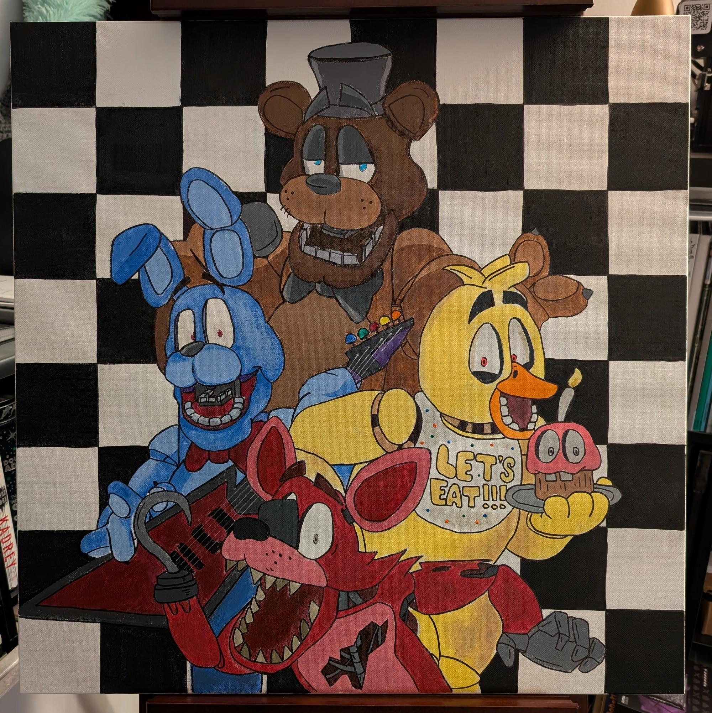
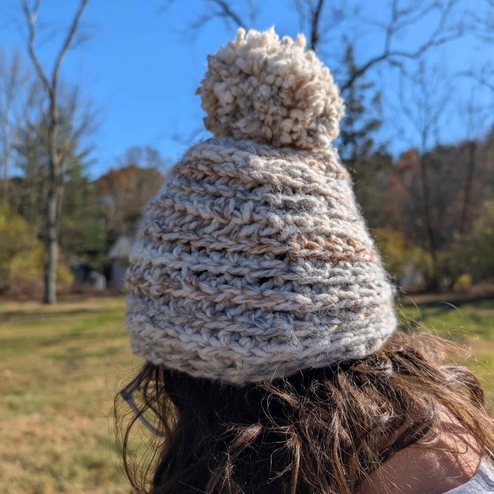

Acrylics
October 28, 2024
Acrylic paint
I’ve been working with different artistic mediums as of late. Pen, pencil, and paper have been where I always felt most comfortable, but being a self-proclaimed life-long creative, I have a responsibility to expand my capabilities.
Painting felt like a natural starting point, particularly peaking my interest because I have never done it before. After some research, I decided to start with acrylic paints because, despite their limitations unlike oil paints, they can be a tad more forgiving and requires less preparation. Inspired by animation, I wanted to use a subject with bolder colors and less contrast, making it more simple to stick with basic lines and focus on what it feels like to put brush to canvas. Victoria, always being offered first-dibs at deciding what I draw or create, chose the main characters in Five Nights at Freddy’s—a video game and movie she loves.
Ten hours, thirty minutes, and a third of an audiobook later, I finished my first painting.

Acrylic yarn
My ongoing efforts to explore new mediums didn’t end at acrylic paint, either.
Victoria, being the crochet professional she is, was asked to assist me in making my first crocheted good—a hat.
Off the bat, much harder than painting. I have tried cross-stitching before and I just don’t believe the fiber arts are a medium I thrive in. Perhaps it’s because I don’t feel I have the same control over loose yarn as I do a solid writing utensil. Needless to say, it took me four hours—something Victoria could do in 20 minutes—but I completed a hat. Unlike the painting, I don’t know if I will return to this medium.
